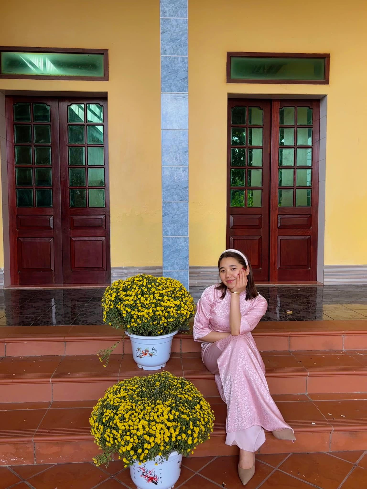

<!DOCTYPE html>
<html lang="vi">

<head>
    <meta charset="UTF-8">
    <title>3D Heart Cinematic Transition</title>
    <style>
        body {
            margin: 0;
            height: 100vh;
            display: flex;
            justify-content: center;
            align-items: center;
            background-color: #050505;
            perspective: 2000px;
            overflow: hidden;
        }

        #meteor-container {
            position: absolute;
            top: 0;
            left: 0;
            width: 100%;
            height: 100%;
            transform-style: preserve-3d;
            pointer-events: none;
        }

        .meteor {
            position: absolute;
            width: 3px;
            height: 250px;
            background: linear-gradient(to bottom, rgba(0, 255, 255, 0), rgba(0, 255, 255, 0.8), #fff);
            opacity: 0;
            filter: blur(1px);
            animation: meteorFall var(--dur) linear infinite;
            animation-delay: var(--delay);
        }

        @keyframes meteorFall {
            0% {
                transform: translate3d(var(--startX), var(--startY), var(--tz)) rotate(35deg);
                opacity: 0;
            }

            20%,
            80% {
                opacity: 1;
            }

            100% {
                transform: translate3d(var(--endX), var(--endY), var(--tz)) rotate(35deg);
                opacity: 0;
            }
        }

        /* --- LOGIC ĐIỀU KHIỂN CAMERA (Phóng to/Thu nhỏ) --- */
        .camera {
            transform-style: preserve-3d;
            /* Tổng chu kỳ: 45s */
            animation: cameraLogic 45s infinite ease-in-out;
            display: flex;
            justify-content: center;
            align-items: center;
        }

        @keyframes cameraLogic {

            /* 0s - 15s: Ở khoảng cách bình thường (400px) */
            0%,
            33.3% {
                transform: translateZ(300px);
            }

            /* 15s - 20s: Zoom vào rất gần (750px) */
            44.4% {
                transform: translateZ(850px);
            }

            /* 20s - 25s: Giữ zoom gần */
            55.5% {
                transform: translateZ(850px);
            }

            /* 25s - 35s: Zoom ra xa để thấy hình trái tim */
            77.7% {
                transform: translateZ(-3200px) rotateX(15deg) rotateY(-10deg);
            }

            /* 35s - 45s: Giữ nguyên để xem mưa sao băng */
            100% {
                transform: translateZ(-3200px) rotateX(15deg) rotateY(-10deg);
            }
        }

        /* --- LOGIC XOAY KHỐI LẬP PHƯƠNG (Nhanh/Chậm) --- */
        .cube {
            width: 100%;
            height: 100%;
            position: relative;
            transform-style: preserve-3d;
            animation: rotateCubeDynamic 45s infinite linear;
        }

        @keyframes rotateCubeDynamic {

            /* 0s - 10s: Xoay bình thường (360 độ) */
            0% {
                transform: rotateX(0deg) rotateY(0deg);
            }

            22.2% {
                transform: rotateX(360deg) rotateY(360deg);
            }

            /* 10s - 15s: Xoay rất nhanh (+1440 độ) */
            33.3% {
                transform: rotateX(1800deg) rotateY(1800deg);
            }

            /* 15s - 20s: Zoom gần, xoay bình thường (+360 độ) */
            44.4% {
                transform: rotateX(2160deg) rotateY(2160deg);
            }

            /* 20s - 25s: Xoay rất nhanh lần 2 (+1440 độ) */
            55.5% {
                transform: rotateX(3600deg) rotateY(3600deg);
            }

            /* 25s - 45s: Xoay bình thường trở lại */
            100% {
                transform: rotateX(4680deg) rotateY(4680deg);
            }
        }

        .scene {
            position: absolute;
            width: 200px;
            height: 200px;
            transform-style: preserve-3d;
        }

        .face {
            position: absolute;
            width: 200px;
            height: 200px;
            border: 1px solid rgba(0, 255, 255, 0.5);
            opacity: 0.8;
            box-shadow: 0 0 25px rgba(0, 255, 255, 0.4);
            background: rgba(255, 255, 255, 0.05);
        }

        .face img {
            width: 100%;
            height: 100%;
            object-fit: cover;
        }

        .front {
            transform: rotateY(0deg) translateZ(100px);
        }

        .back {
            transform: rotateY(180deg) translateZ(100px);
        }

        .right {
            transform: rotateY(90deg) translateZ(100px);
        }

        .left {
            transform: rotateY(-90deg) translateZ(100px);
        }

        .top {
            transform: rotateX(90deg) translateZ(100px);
        }

        .bottom {
            transform: rotateX(-90deg) translateZ(100px);
        }

        /* --- LOGIC HIỆN CÁC KHỐI PHỤ --- */
        .extra-cube {
            animation: fadeInLogic 45s infinite;
        }

        @keyframes fadeInLogic {

            /* Chỉ hiện ra khi bắt đầu zoom ra xa (giây thứ 25) */
            0%,
            55.5% {
                opacity: 0;
                visibility: hidden;
            }

            77.7%,
            100% {
                opacity: 1;
                visibility: visible;
            }
        }

        /* --- LOGIC MƯA SAO BĂNG --- */
        .meteor-system {
            width: 100%;
            height: 100%;
            position: absolute;
            animation: meteorSystemLogic 45s infinite;
        }

        @keyframes meteorSystemLogic {

            /* Chỉ hiện mưa sao băng ở 10 giây cuối cùng (giây thứ 35) */
            0%,
            77.7% {
                opacity: 0;
                visibility: hidden;
            }

            80%,
            100% {
                opacity: 1;
                visibility: visible;
            }
        }
    </style>
</head>

<body>
    <div class="meteor-system">
        <div id="meteor-container"></div>
    </div>

    <div class="camera">
        <div id="world"></div>
    </div>

    <script>
        const world = document.getElementById('world');
        const meteorContainer = document.getElementById('meteor-container');

        const dots = [
            { x: 0, y: 0, main: true },
            { x: -1, y: -2 }, { x: -2, y: -2 }, { x: 1, y: -2 }, { x: 2, y: -2 },
            { x: -1, y: -1 }, { x: -2, y: -1 }, { x: -3, y: -1 }, { x: 1, y: -1 }, { x: 2, y: -1 }, { x: 3, y: -1 },
            { x: -1, y: 0 }, { x: -2, y: 0 }, { x: -3, y: 0 }, { x: 1, y: 0 }, { x: 2, y: 0 }, { x: 3, y: 0 },
            { x: 0, y: -1 }, { x: 0, y: 1 }, { x: -1, y: 1 }, { x: -2, y: 1 }, { x: 1, y: 1 }, { x: 2, y: 1 },
            { x: 0, y: 2 }, { x: -1, y: 2 }, { x: 1, y: 2 }, { x: 0, y: 3 }
        ];

        function createCube(x, y, isMain) {
            const scene = document.createElement('div');
            scene.className = isMain ? 'scene' : 'scene extra-cube';
            scene.style.transform = `translate3d(${x * 250}px, ${y * 250}px, 0)`;
            scene.innerHTML = `
                <div class="cube">
                    <div class="face front"></div>
                    <div class="face back"></div>
                    <div class="face right"></div>
                    <div class="face left"></div>
                    <div class="face top"></div>
                    <div class="face bottom"></div>
                </div>`;
            return scene;
        }

        dots.forEach(pos => world.appendChild(createCube(pos.x, pos.y, pos.main)));

        for (let i = 0; i < 200; i++) {
            const meteor = document.createElement('div');
            meteor.className = 'meteor';
            const startX = Math.random() * 4000 - 1000;
            const startY = Math.random() * -1000 - 500;
            const endX = startX - 2500;
            const endY = startY + 2500;
            const tz = (Math.random() - 0.5) * 5000;
            const duration = 1 + Math.random() * 2;
            const delay = Math.random() * 8;
            meteor.style.setProperty('--startX', `${startX}px`);
            meteor.style.setProperty('--startY', `${startY}px`);
            meteor.style.setProperty('--endX', `${endX}px`);
            meteor.style.setProperty('--endY', `${endY}px`);
            meteor.style.setProperty('--tz', `${tz}px`);
            meteor.style.setProperty('--dur', `${duration}s`);
            meteor.style.setProperty('--delay', `${delay}s`);
            meteorContainer.appendChild(meteor);
        }
    </script>
</body>

</html>